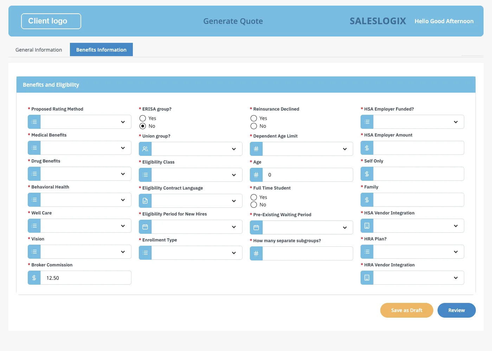
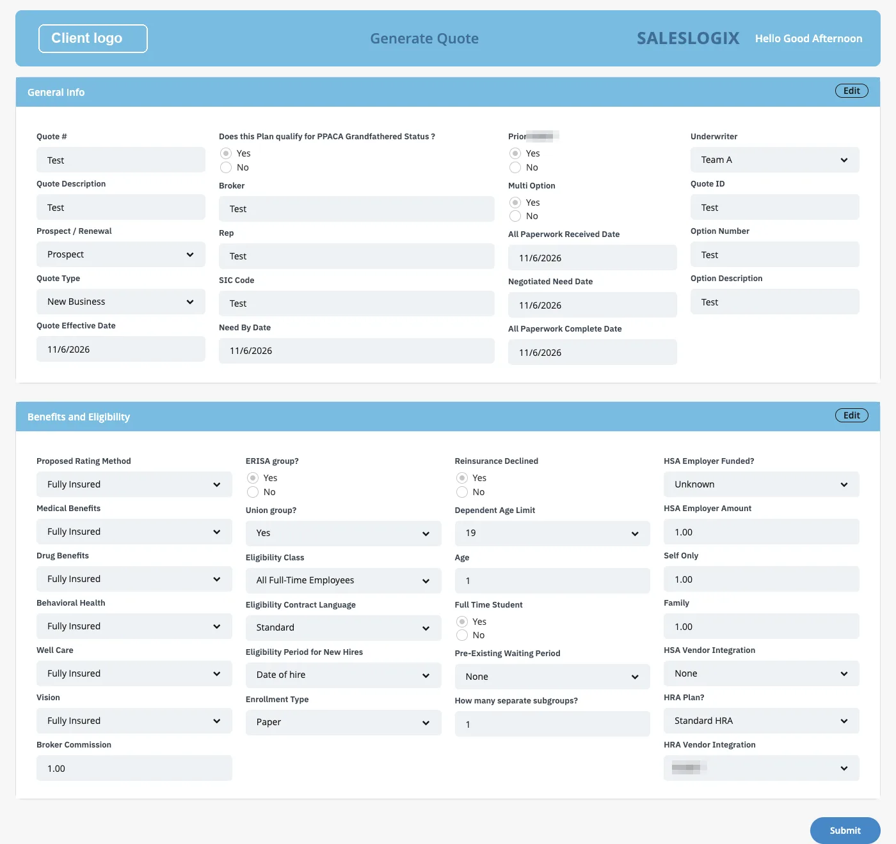

IBM Bob × BAW Dev Tools MCP · demo script
From the client's Word document to a BAW app.
The client wants to see how much of the BAW work IBM Bob generates, so their developers do not have to build all the BAW artifacts by hand. Bob reads the client's Word document and screenshots, builds the Large Group Fully Insured Sales app in BAW, and tests it.
Replaced. The current script is Bob builds the Large Group quote app step by step. It builds the same app, one heading of the document at a time, with a check after each step. This page is kept as a record of the earlier rehearsals.
- 8–12
- min of Bob
- 2
- business objects
- 45
- required fields
- 2
- approvals
- 0
- developer edits in BAW




T−30 before the meeting
Prepare, then run five parts.
Run of show
- The inputThe client's document, screenshots and logo, and the prompt with five added lines.
- Bob builds the appBob reads, shows a design, builds, installs and tests. You answer two questions.
- Ten checks in BAWEach check with the place to click in Workflow Center.
- The live momentYou use the finished app in Workplace.
- Generated, and still openWhat Bob generated, what the developers still decide, and what to do if it breaks.
The rehearsal runs took about 8 to 12 minutes from sending the prompt to Bob's final report, including the two approvals.
Before the meeting Thirty minutes before
- Restart Bob IDE so it runs the current
baw-dev-toolsMCP server. Check that the server is connected. - Check the App Builder Widgets toolkit (ABW). Its snapshot must be installed on the BAW server. If it is missing, Bob can build and install it with
build_widget_toolkitandinstall_app. - Pick an acronym that nobody has used. It must start with ZZ. This script uses
ZZLGD. If an app with that acronym already exists on the server, pick another one and change the prompt. - Put the client's files in
screenshots/Quote/. This folder stays out of the repository. It holds the Word document, the screenshots and the logo. - Know your two answers. Bob stops twice and waits for you: once to approve the design, and once to approve the import into BAW.
- Open Workflow Center and Workplace in two browser tabs, signed in, so you can switch quickly later.
Part 1 the input
What the client gave Bob.
A Word document with the fields and their types, two screenshots, and a logo. Then five added lines, shown on their own so the client sees exactly what was added.
Build the BAW app described in `screenshots/Quote/Customer workflow requirement/IBM_Bob_BAW_Workflow_Requirements (1).docx`. Use the acronym ZZLGD.
The General Information UI screenshot is `screenshots/Quote/generate-quote.png`. The Benefits and Eligibility UI screenshot is `screenshots/Quote/image (1).png` to `image (3).png` (one screen, scrolled). Use `screenshots/Quote/<client logo>.png` as the logo.
In addition to the document:
- The screenshots show the look and the control style only. Build only the fields the document lists, with the document's data types.
- Every field in the document is required.
- Each tab has a Save as Draft button. Each tab has a Next button; the last tab's button is Review, which goes on to Review Quote.
- Review Quote shows both views read-only, with an Edit button on each section, and the final Submit.
- There is no approve or send-back step.Step 1. Show the client's files.
- The client's document
IBM_Bob_BAW_Workflow_Requirements (1).docx. It lists the fields of the app with their data types. (It is not in this repository.) - The screenshot of the General Information screen.
- The screenshot of the Benefits and Eligibility screen. It is one screen saved as three scrolled images.
- The client's logo file.
Say
- “This is what the client gave us: a Word document that lists the fields, and screenshots of two screens. Bob has to turn this into a BAW app.”
Step 2. Show the five added lines.
Do Scroll the prompt to the bottom, below "In addition to the document", and read the five lines.
Say
- “The five lines are everything we added to the client's document. The screenshots give the look. The document gives the fields. Everything else is Bob's work.”
Do Paste the prompt into Bob and send it.
Part 2 about 8 to 12 min
Bob reads, designs, builds and tests.
Bob stops twice and waits for you: the design, and the import. Everything else it does on its own.
office_readreads the document; the field tables come from a document dumpview_imagelooks at the screenshotsimage_colorssamples the colours- Design stop: you approve the design
create_appwrites the .twxinspect_coacheschecks it- Import stop: you approve the import
install_appinstalls the apptest_serviceblocked Review; both tabs filltest_processruns to completiontest_processwithdraft_then_resume
Bob tests on its own Bob asks you
Step 1. Bob reads the document and the screenshots.
- Reads the Word document with
office_read. The field tables are read from a document dump. - Looks at the screenshots with
view_image. - Samples colours from the screenshots with
image_colors.
Say
- “Bob reads the document the way a person would: the field tables first, then the pictures. It takes the colours from the client's own screenshots.”
Step 2. The design stop.
- Shows its design and waits. The design has two business objects, GenInfoBO with 19 fields and BenefitsBO with 26 fields. All fields are required.
- Two reusable Views: QuoteDetails CV and BenefitsDetails CV.
- One Generate Quote screen with two tabs, then Review Quote, then the process.
- The field names and types come from the document.
- The dropdown options are placeholders, because the document lists no options.
Do Answer: “Use the built-in template, and I approve.”
Say
- “This is the first of two stops. Bob does not build anything until a person agrees with the design.”
Step 3. Build and install.
| Order | Bob's step | Tool |
|---|---|---|
| 1 | Writes the app as a .twx file | create_app |
| 2 | Checks the screens in that file | inspect_coaches |
| 3 | Asks you to approve the import | You answer |
| 4 | Installs the app in BAW | install_app |
Do Approve the import.
Say
- “This is the second stop. Bob asks before anything is installed on the server.”
Step 4. Bob tests the app on its own.
test_service: the Review button stays blocked while required fields are empty, and no request is sent. Both tabs then fill: 19 fields and 26 fields.test_process: the process runs Start, Generate Quote, Review Quote, End, and completes.test_processwithdraft_then_resume: Save as Draft works with required fields still empty. The task stays in the inbox. Reopening it brings back the values on the tab the user left, for example Self Only 12.5, shown as 12.50.
Do Nothing. Wait for Bob's final report.
Say
- “Bob tested the app itself, in a browser, before it told us it was done. We will look at the same things by hand in a moment.”
Part 3 ten checks
Open the app in Designer and go through the list.
Open Workflow Center, find the app, and open it in Designer. Each check says where to click.
Say
- “Everything on this list is a normal BAW artifact. Your developers can open each one, change it and extend it.”
Checks 1 to 3. The process and the data.
| # | What to see | Where to click |
|---|---|---|
| 1 | The process diagram: Start, Generate Quote, Review Quote, End. There is no approve or send-back step. | Processes, open the process |
| 2 | GenInfoBO has 19 properties: 11 String, 5 Date and 3 Boolean. | Data, open GenInfoBO |
| 3 | BenefitsBO has 26 properties: 16 String, 4 Decimal, 3 Boolean and 3 Integer. | Data, open BenefitsBO |
Checks 4 to 6. The Views and the screen.
| # | What to see | Where to click |
|---|---|---|
| 4 | The View QuoteDetails CV is bound to GenInfoBO. | User Interface, open QuoteDetails CV |
| 5 | The View BenefitsDetails CV is bound to BenefitsBO. | User Interface, open BenefitsDetails CV |
| 6 | The client-side human service Generate Quote has two tabs, the variables genInfo and benefits, and the task data mapping. Show the Benefits tab (image 03). | User Interface, open Generate Quote |
Checks 7 to 10. What the app does.
| # | What to see | Where to click |
|---|---|---|
| 7 | Required-field validation blocks Review while a required field is empty, and shows the first tab with errors (image 01). | Open the Benefits Information tab and press Review on the empty form |
| 8 | The whole process runs to completion. | Run it once in Workplace, or show Bob's test_process result |
| 9 | Save as Draft and resume. The values come back on the tab the user left (image 02). | Part 4 |
| 10 | Review Quote is read-only, with an Edit button on each section and Submit (image 04). Checked by hand in Workplace. | Part 4 |
Part 4 live moment
You use the finished app in Workplace.
Start the process, and show that the form blocks you, remembers a draft, and refuses a cleared field.
Step 1. The form blocks you, and remembers.
- In Workplace, start the process.
- Open the Benefits Information tab and press Review on the empty form. It is blocked, and the first tab shows its errors (image 01).
- Fill in part of the form.
- Press Save as Draft.
- Reopen the task from the inbox. The values and the tab come back (image 02).
Say
- “The form will not let you go on while a required field is empty. But you can always save what you have and come back to it later.”
Step 2. Review, Edit and Submit.
- Finish filling in the form.
- Press Review. The Review Quote task opens (image 04).
- Press Edit on Benefits. Clear a required field. Press Submit. Submit refuses.
- Fill the field again. Press Submit. The process completes.
Say
- “Review Quote is read-only until you press Edit, and Submit checks the fields again.”
Part 5 close
What Bob generated, and what is still open.
Tick each rehearsal check as it passes. The page remembers them; copy the results when you are done.
checks passed
Say plainly
- “In the final rehearsal, Bob generated every artifact on the list. No developer edits in BAW were needed.”
| Bob generated | Developer edits needed |
|---|---|
| The process: Start, Generate Quote, Review Quote, End | None |
| The business objects GenInfoBO (19 fields) and BenefitsBO (26 fields) | None |
| The reusable Views QuoteDetails CV and BenefitsDetails CV | None |
| The Generate Quote screen with two tabs, and the task data mapping | None |
| Required-field validation, Save as Draft and resume | None |
| Review Quote: read-only, Edit on each section, Submit | None |
One-time engineering work (not demo work)
- A reference Save as Draft sample was built once in Designer, so that the generator could reproduce BAW's Postpone pattern.
- The generator and test fixes made during the rehearsals.
Known items to mention honestly
- The dropdown options
- They are placeholders until the client supplies the real lists.
- “Union group?”
- It follows the document's String type, not the screenshot's checkbox.
- Lanes
- The document names no lanes, so Bob may place both tasks in one lane or use two.
- Layout
- Bob's layout can vary slightly between runs. The names, types, flow and behaviour stay the same.
- How long does it take?
- The rehearsal runs took about 8 to 12 minutes from sending the prompt to Bob's final report, including the two approvals.
| Problem | What to do |
|---|---|
| One of Bob's BAW tools fails | The tool error now states the reason, either an HTTP code or “Cannot reach BAW”. Fix that, then ask Bob to continue. |
| The login to BAW has expired | It is renewed automatically. |
| Bob still behaves as before a fix | Restart Bob IDE. |
| Bob refuses to repeat a call after three identical failures | Start a fresh Bob task. |
| The toolkit install fails | Import the .twx by hand in Workflow Center (Process Apps, Import). |
| A browser test fails | Look at the screenshots it saved in work/, and run it again. |